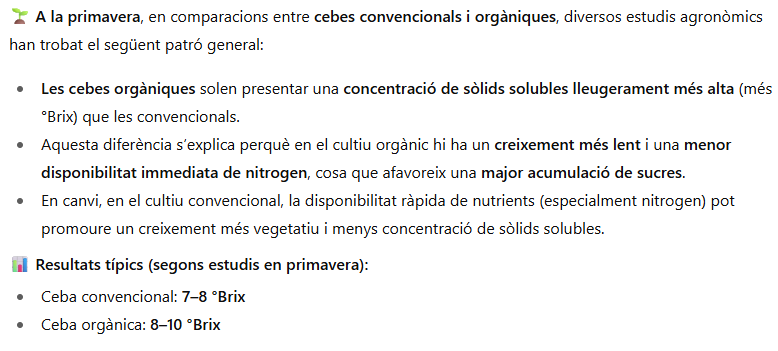

He trobat diferents articles cièntifics que estudian el meu tema i els trbareu acontinuació en format APA7.APA7 es una forma d'escriure un article cèntific
Nitrogen(N),fosfor(P),Potasi(K),Calci(Ca),Magnsei(Mg),bhor(B),Manganès(Mn),Zinc(Zn),Ferro(Fe),Coure(Cu).
En la captura podem veure les diferencies entre una ceba convetional i organica en dos estacions del any (tardo i primavera) presenta resultats majors al convetional (9.37 ◦Brix) en la pimavera respecte al organic(7.17 ◦Brix99) , mentres que en la tardo no presenta diferencies significants.
A la captura se observa que diu que el convetional té menys concentracio de solids solubles que el organica mentre que el estudi diu al contrari .
Articles 2